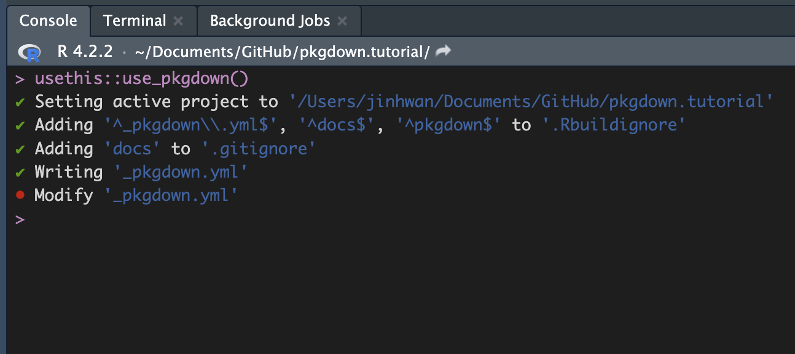

# install.packages('pkgdown') CRAN version
remotes::install_github('r-lib/pkgdown') # Github version
library(pkgdown)
library(usethis) Introduction

R 패키지를 개발할 때, 개발 자체도 힘들지만, 패키지를 잘 설명하는 문서화 역시 매우 중요합니다.
아무리 좋은 기능을 개발해두었어도, 어떤 기능이 있는지, 어떤 방식으로 사용할 수 있는지… 등을 작성해 두지 않으면 (코드를 열어보기 전까진 모르기 때문에) 패키지를 사용하려는 사람들로부터 사랑받기 어렵습니다.
특히나, 패키지를 설치해서 ? 를 통해 확인할 수 있는 것과, 설치 하기 전에 깃헙의 패키지 리포지토리에서 확인할 수 있는 것은 꽤 차이가 큽니다.
하지만 문서화와 이 결과물을 웹페이지로 만드는 것은 많은 시간과 노력이 필요한 작업입니다.
이런 문제를 해결하기 위해 pkgdown이라는 R 패키지가 등장했습니다. 이번 글에서는 pkgdown을 사용하여 R 패키지를 문서화하는 페이지를 만드는 방법을 소개합니다.
pkgdown이란
pkgdown is designed to make it quick and easy to build a website for your package.
공식 홈페이지의 설명에 따르면, pkgdown은 패키지를 위한 웹사이트를 쉽고 빠르게 제작하게 합니다.
혹은 pkg + (Rmark)down 으로 이해하는 것도 개인적으로는 괜찮다고 생각합니다.
그렇다면 패키지를 위한 웹사이트는 어떤 것을 의미할까요?
이를 알기 위해 pkgdown의 결과물 예시를 하나 소개해보겠습니다.
pkgdown을 사용한 R 패키지의 좋은 예시는 (당연히) tidyverse에서 확인할 수 있습니다.


많은 R 패키지가 위의 이미지처럼 pkgdown을 사용한 웹페이지를 제공하는 것은 아니지만, 유사한 기능을 제공하는 R 패키지들이 여러 종류가 있다면 그 중에서 설명이 잘 되어있는 패키지를 사용하게 되는 것은 사용자의 입장에서 자연스러운 일입니다.
패키지를 개발하는 사람의 입장으로 한번 생각해보면 어떨까요?
R 패키지를 만드는 것도 익숙해지기 전까진 꽤나 많은 리소스를 필요로 하는데
R 패키지를 설명하는 웹사이트까지 만들려고 한다면, (심지어 R 외에도 웹 개발 관련 지식이 필요한데!) 너무 피곤한 하루가 될 것입니다.
그런데 만약 pkgdown을 사용한다면 Rmarkdown만으로도 충분히 피곤한 하루를 피할 수 있습니다.
pkgdown은 R 패키지의 소스코드(.R)와 메타데이터(.yml)를 기반으로 웹페이지를 생성하며, 이를 통해 사용자들이 패키지의 함수와 데이터셋, 그리고 함수와 사용 방법, 아티클등을 쉽게 이해할 수 있습니다. (이 과정중에서 roxygen2를 활용하기도 합니다.)
그리고 최종적으로, 만든 웹페이지를 Github을 활용하여 (Github Pages) 온라인에 공유 할 수 있습니다.
단, 공유는 pkgdown의 기능은 아니고, 공유할 수 있는 형태의 결과물을 만드는 것이 pkgdown의 역할이라고 보면 좋습니다.
오늘 만들 결과물은 패키지 링크와 이 링크에서 확인할 수 있습니다.
pkgdown 설치 및 환경 설정
위에서 서술한 것처럼 pkgdown 또한 하나의 R package이기 때문에 설치를 해야합니다.
pkgdown은 패키지의 웹페이지를 만드는 역할을 하기 때문에 pkgdown의 “대상이 되는” R 패키지로 pkgdown.tutorial이라는 간단한 패키지를 먼저 만들었습니다. (위 링크 참조)
pkgdown.tutorial
💡
ttest와ttest2는 동일한 내용의 함수이며,roxygen2의 효과를 보기 위해 비교용도로 사용합니다.
# ttest.R (= ttest2.R)
ttest <- function(x, y = NULL, alternative = 'two.sided',
mu = 0, paired = FALSE, var.equal = FALSE,
conf.level = 0.95, ...){
t.test(x, y, alternative, mu, paired, var.equal, conf.level, ...)
}패키지에 ttest와 ttest2라는 함수를 만들고 패키지 빌드 직후의 구성 상태는 아래와 같습니다.
/pkgdown.tutorial
- .gitignore
- .Rbuildignore
- DESCRIPTION
- NAMESPACE
- pkgdown.tutorial.Rproj
- /R
- ttest.R
- ttest2.R이후 pkgdown.tutorial의 작업 디렉토리에서 (.Rproj를 열어) usethis::use_pkgdown()을 실행합니다.
그 결과 아래 이미지처럼 _pkgdown.yml이라는 파일이 생기는 것을 확인 할 수 있습니다.

💡
.gitignore에서docs를 삭제해주세요.
build_site
pkgdown의 핵심 코드를 하나만 고르라면 pkgdown::build_site()입니다.
이는 현재 작업된 내용들을 기반으로 웹사이트를 만드는 역할을 하는 함수입니다.
바로 실행해보면 아래와 같은 결과를 확인할 수 있습니다.
💡
library(pkgdown)을 실행했다면 앞의pkgdown::은 붙이지 않아도 좋습니다

pkgdown의 구성 요소
pkgdown에서 웹페이지 제작을 위해 제공하는 주요 요소들을 소개하겠습니다.
_yml
_pkgdown.yml은 보여지는 웹사이트를 구성하는 파일입니다.
💡 yml은 들여쓰기 (indent)를 깐깐하게 사용하기 때문에 에러가 난다면 이를 확인해보는 것이 좋습니다.
들여쓰기를 하나도 하지 않은 (처음
url과 같은 위치) 경우를 lv0이라 표현합니다.
1. template (lv0)
template:
bootstrap: 5
bootswatch: flatly 처럼 변경하여 웹사이트의 테마를 바꿀 수 있습니다. 아래의 예시에서는 flatly를 사용했습니다.
theme에서 사용할 수 있는 옵션은 bootswatch의 theme를 소문자로 입력한 값이며, 필요한 경우 bslib 옵션을 활용하여 더 자세한 커스터마이즈를 할 수 있습니다.
template:
bootstrap: 5
bslib:
bg: "#202123"
fg: "#B8BCC2"
primary: "#306cc9"2-1. intro
Get Started 페이지는 패키지와 동일한 이름을 갖는 rmd(예시는 pkgdown.tutorial.rmd)로 아티클을 추가해야만 합니다.
아티클을 추가하는 것에 대해서는 아래에서 자세하게 다루겠습니다. (지금은 아래 코드를 실행만 하면 됩니다.)
💡 usethis::use_article(“pkgdown.tutorial”, “intro”)
2-2. reference
ttest.R에서 roxygen2를 활용하여 함수 description을 만들고 나면 그 결과가 reference에 나타납니다. (/man 디렉토리에 .rd 파일을 생성합니다.)
roxygen2에서 사용 가능한 태그의 종류는 다양하며, 보통은 @import, @export, @title, @description, @details, @param, @returns, @examples 정도가 권장됩니다.
앞서 만들었던 ttest.R에 아래 내용을 코드의 맨 위에 추가한 다음, CTRL/CMD + SHIFT + D를 통해 일부 내용만 reference를 만들어 보겠습니다. (ttest2.R은 비교용)
#' @title ttest
#' @description run t test
#' @details
#' alternative = "greater" is the alternative that x has a larger mean than y. For the one-sample case: that the mean is positive.
#' If paired is TRUE then both x and y must be specified and they must be the same length.
#' Missing values are silently removed (in pairs if paired is TRUE).
#' If var.equal is TRUE then the pooled estimate of the variance is used.
#' By default, if var.equal is FALSE then the variance is estimated separately
#' for both groups and the Welch modification to the degrees of freedom is used.
#' If the input data are effectively constant (compared to the larger of the two means)
#' an error is generated.
#' @param x a (non-empty) numeric vector of data values.
#' @param y an optional (non-empty) numeric vector of data values.
#' @returns A list with class "htest" containing the following components:
#' @examples t.test(1:10, y = c(7:20)) # P = .00001855
#' @export이후 pkgdown::build_site()를 실행하면 아래 이미지처럼 reference 페이지가 navbar에 생성 되는 것을 확인할 수 있습니다.

2-3. articles
usethis::use_article(<ARTICLENAME>, <PAGETITLE>)의 형태로 사용 할 수 있습니다.
💡 여기서 ARTICLENAME에는 숫자, 문자 그리고
-와_만 활용할 수 있습니다. (소문자를 권장합니다)
usethis::use_article("using-ttest", "perform t-test") 코드를 실행하면 using-ttest.Rmd라는 파일이 생성되며 build_site()를 통해 그 결과를 반영 할 수 있습니다.

4. footer (lv0)
크게 중요한 것은 아니지만, 모든 페이지에 공통으로 나타날 수 있게 하는 역할을 합니다.
footer:
structure:
left: developed_by
right: built_with
5. DESCRIPTION
자세한 설명은 링크를 참조하세요.
원래는 패키지 개발을 하면서 채워졌어야 하지만, pkgdown.tutorial에서는 미처 채워지지 못한 부분들로 아래와 같이 채우겠습니다.
💡 먼저 usethis::use_mit_license()등을 통해 라이센스를 설정하고, 그 다음 DESCRIPTION을 채우는 것을 권장합니다.
Package: pkgdown.tutorial
Title: tutorial pkgdown
Version: 0.0.1
Authors@R:
person("Jinhwan", "Kim", , "jinhwan@zarathu.com", role = c("aut", "cre"))
Description: contains base ttest function
License: MIT + file LICENSE
Encoding: UTF-8
Roxygen: list(markdown = TRUE)
RoxygenNote: 7.2.3
Suggests:
rmarkdown
URL: https://github.com/jhk0530/pkgdown.tutorialURL을 추가 한 것에 유의하세요 (navbar의 github 버튼에 사용됩니다)

- 오른쪽의
Links,License,Developers등이 채워졌음을 확인할 수 있습니다.
메인 페이지 추가
여기까지 잘 따라왔다면, 패키지의 구조는 아래 이미지와 같습니다.

이제 usethis::use_readme_md()를 사용하여 README.MD를 추가하여 메인 페이지를 만들어줍니다.
github repository를 만들면서, add readme를 통해 만들었어도 상관 없지만, 위 함수를 사용하면 최소 템플릿을 만들어 주기 때문에 조금 더 편리할 수 있습니다.
💡 rmd를 선호한다면
usethis::use_readme_rmd()를 사용해도 좋습니다.
최종 결과는 아래 이미지와 같습니다.

단, 지금은 주소창이 https://로 시작하지 않는, 작업자의 pc에서만 확인 할 수 있는 형태라는 것을 확인해야합니다.
웹사이트 빌드 & 배포
pkgdown을 활용해서 만든 웹사이트를 github을 이용해 배포 하는 방법을 공유하겠습니다.
예시에서는 패키지를 먼저 만들고 github repo를 만들었기 때문에 github desktop에서 -> add existing repository를 통해 github에 올렸습니다. (private 가 아닌 public)
깃헙에 올린 이후 settings -> pages 로 이동합니다.


이후 Branch에서 main, /docs를 선택한뒤 save를 클릭합니다.

이제 github에서는 pkgdown이 build_site()로 /docs에 만든 html 파일들을 github page로 배포하는 작업을 시작합니다.
💡 페이지 반영에는 시간이 걸리기 때문에 몇분이 지난 후 새로고침을 해야 합니다.
몇 분 후, 아래 이미지처럼 페이지 URL 주소가 나타나면 pkgdown으로 만든 웹페이지를 누구나 확인 할 수 있습니다.
마지막으로 리포지토리의 about (오른쪽 톱니바퀴)에서 website에 주소를 입력하면 끝입니다.

마치며
이번 글에서는 Rmarkdown 기반으로, R 패키지 문서화 / 웹페이지 제작하는 R 패키지인 pkgdown과 이를 github을 이용해서 배포 하는 방법을 소개했습니다. pkgdown을 사용하면 많은 리소스를 절약하면서도, 멋진 웹사이트를 만들어 낼 수 있습니다.
글에서는 아주 간단한 예시만을 다뤘지만, 여러 R 패키지를 사용하다보면 pkgdown을 이렇게도 쓸 수 있구나… 라는 생각이 드는 경우가 많습니다.
추후에 여러분이 pkgdown을 사용하여 좋은 문서를 만들 수 있기를 기대하며 글을 마치겠습니다.
💡 pkgdown 관련 도움이 필요한 경우, 저희 zarathu로 문의주세요 !
라이센스
인용
BibTeX 인용:
@online{kim2023,
author = {Jinhwan Kim},
title = {pkgdown을 활용한 R 패키지 문서화},
date = {2023-03-17},
url = {https://blog.zarathu.com/posts/2023-03-17-pkgdown},
langid = {kr}
}
인용방법
Jinhwan Kim. 2023. “pkgdown을 활용한 R 패키지 문서화.”
March 17, 2023. https://blog.zarathu.com/posts/2023-03-17-pkgdown.